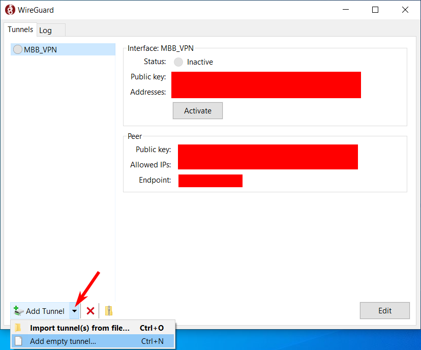
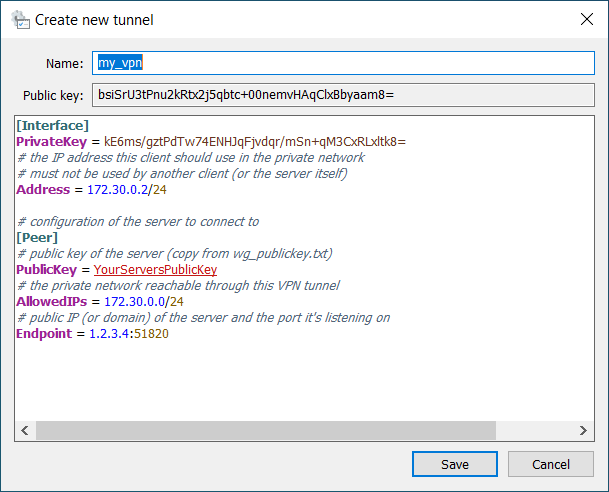

This Howto explains how to set up a Linux server that runs SSH,
WireGuard VPN, Forgejo (a fork of
Gitea, a web-based git forge, kinda like self-hosted Github) and a minimal
DNS server so we can have an internal domain for pretty URLs.
We’ll also set up automated backups and some basic self-monitoring.
To follow it you’ll need (very) basic Linux commandline knowledge, i.e. you should be able to navigate
the file system in a terminal, use SSH and edit textfiles with a terminal-based text editor (like nano,
joe or vim, whatever you prefer).
It will assume that you’re using Ubuntu Server 22.04, but it should be the same for other
(systemd-using) Debian-based Linux distributions, and reasonably similar when using other distributions.
You’ll also need full root privileges on the system.
Hopefully this Howto is also useful if you only want to do some of these things (maybe set up a public Forgejo instance, or just a Wireguard server without Forgejo on it).
Note: You’ll often need to enter commands in the shell. The following convention will be used:
$ some_command --some argument
means: Enter “some_command --some argument” (without quotes) in a Linux terminal, as normal user.
# some_command --some argument
means: Enter “some_command --some argument” (without quotes) in a Linux terminal, as root,
or maybe with sudo (you can use $ sudo -i to get a root-shell so you don’t have to use sudo
for each command).
Motivation
You can skip this section if you’re already convinced that this Howto is relevant for you ;-)
We needed a git server with a web frontend.
It should be low-maintenance, because we’re a small company that doesn’t have a dedicated admin who
could regularly spend time on keeping the server up-to-date, especially when running external
software packages where updates might require more steps than a sudo apt update && sudo apt upgrade.
To be honest, we would probably just pay a service like Github or Gitlab or whatever, if they had
offers that meet our requirements at a reasonable price - but we create games (and related products),
which means we don’t only have code, but also lots of binary data (game assets like models and textures),
even relatively small projects can easily have checkout sizes (without history!) of dozens of GB,
bigger projects often use several hundreds of GB or more. Nowadays Git supports that reasonably well with
Git Large File Storage (LFS), and while several Git hosters generally support LFS,
prices for data are a bit high: Gitlab’s takes $60/month for packs of 10GB of storage and 20GB
of traffic.. Githubs prices are a bit less ridiculous with “data packs” that cost $5/month
for 50GB of data and 50GB of traffic, but if you have a 40GB repo you’ll already need a second
data pack if you do more than one full clone per month.. this doesn’t scale that well.
So self-hosting is a lot more attractive, as you can get a VPS (Virtual Private Server,
basically a VM running “in the cloud”) with several hundreds of GB storage for < €20/month,
and S3-style “object storage” (that can be used for Git LFS data) for about €10 per 1TB per month1.
To host Git (and get a nice Github-ish frontend) we use Forgejo, a fork of Gitea. It’s written in Go and is just a single executable with few external dependencies (it needs a database, but supports sqlite, which should be good enough for up to at least 10 users2). It can store the LFS data directly in the filesystem on the servers disk, but also supports storing it in S3-compatible (external) object storage.
We work decentralized, most people at home, so the server needs to be accessible over the
internet.
However, to keep maintenance low (while maintaining reasonable security), we “hide” Forgejo
behind a Wireguard VPN, so:
- The only network ports open to the internet are those of Wireguard and SSH, which both are installed from the standard distro packages (and thus can be easily updated) and are known to have good security (arguably I could also hide SSH behind Wireguard, but I’d like to be able to get on the server with SSH directly even if Wireguard should fail for some reason. I’ll make SSH public-key-auth-only, so I don’t have to worry about bruteforcing attacks on the user passwords).
- This means that we don’t have to worry that Forgejo might have a vulnerability that allows unauthenticated users to run code (Gitlab had such an issue a few years back), because only our team can access it at all, so if we forget to update Forgejo for a while, we’ll still be safe3.
- We can use plain HTTP (instead of HTTPS), because all connections to Forgejo go through the encrypted Wireguard tunnel, so we don’t have to mess around with SSL certificates.
And of course, if we need other web-based services (like maybe a fancier bugtracker) those can be run and protected in the same way.
Configuring SSH for public key authentication
If you rent a (virtual private) server with Linux, you’ll most probably get SSH access, likely with
a password.
It’s more secure (and possibly more comfortable) to use SSH public key authentication (which is also
what’s usually used with Git). For this a cryptographic key-pair, consisting of a private and a public key,
is generated on clients (like the computer you’re using) that should be able to connect to the server
with SSH
Here you’ve got two options: Using your default SSH key, or creating one specifically for this server.
1. Use your default SSH key
Check if you already have a default SSH public key, it’s in $HOME/.ssh/id_rsa.pub (on Windows
C:\Users\YourUserName\.ssh\id_rsa.pub, on Linux something like /home/yourusername/.ssh/id_rsa.pub).
If not, you can create it by running
$ ssh-keygen
in a terminal. Confirm that you want to save
it in the default place (which should be the one mentioned above) and enter a password that will
be used to locally decrypt the key, for extra security.
When connecting to a SSH service that has public key authentication enabled, it will be used by default.
You might be asked for the password of your SSH key then, which is the one you set in ssh-keygen.
2. Creating one for this server
You can create an SSH key pair just for this server, possibly with a different password than the one you’re using for your default SSH key.
To do this, just run:
$ ssh-keygen -f /path/to/keyfile
This will create /path/to/keyfile (private key) and /path/to/keyfile.pub (public key).
You’ll have to tell the SSH client to use this keyfile with ssh -i /path/to/keyfile example-host.com
… or you create an entry in $HOME/.ssh/config for the host:
# my VPS for hosting git
Host example-host.com
# or whatever user you're using for logging in
User root
HostName example-host.com
IdentityFile /path/to/keyfile
then $ ssh example-host.com will automatically set the username and the keyfile
Enabling your public SSH key on the server
Of course you need to tell the server your SSH public key so it can use it to authenticate your
connections. To do this, on the server edit the file $HOME/.ssh/authorized_keys (create it if
it doesn’t exist) and add a line with the contents or the public key file from your local machine
($HOME/.ssh/id_rsa.pub or /path/to/keyfile.pub).
Verify that this works by logging out of the server and logging in again (if you’re using an SSH
key specific to this server, remember to pass the -i /path/to/key option to SSH).
It should ask for a password for the key file, like Enter password for key '/path/to/keyfile':,
not for the host (that prompt would look like username@host password:). Enter the password you
chose when creating the key file and you should be on the server.
If this didn’t work as expected, you’ll have to debug and fix that problem.
Once it works go on with the next step:
Disable SSH login with password
Now that you can log into the server with public key authentication, logging in with a password can be disabled, to prevent attackers from bruteforcing the password.
NOTE: If your server hoster supports creating snapshots of the server, now would be a good time to take one, so you can just restore it in case anything goes wrong here and you can’t log in anymore (shouldn’t happen if this is done correctly and you verified that logging in with public key authentication works, but better safe than sorry).
As root (or with sudo) edit /etc/ssh/sshd_config and search for a line that contains
“PasswordAuthentication” and change it to PasswordAuthentication no - make sure to remove any #
characters from the start of the line as they comment it out!
If there is no line with “PasswordAuthentication” yet, just add the PasswordAuthentication no line
somewhere in the middle of the config, before any lines that start with “Match”, like “Match user asfd”.
Do the same to ensure that a ChallengeResponseAuthentication no line exists.
Save the file and restart the SSH server to make sure the changed config is loaded:
# systemctl restart sshd
If that failed for some reason, systemctl status sshd should show some information on the cause.
Setting up a WireGuard VPN server
Install WireGuard
# apt install wireguard-tools
If the Linux kernel you’re using is older than 5.6 (check with $ uname -r), also install wireguard-dkms
to get the WireGuard kernel module (it’s included in Linux 5.6 and newer).
Basic setup of the server
NOTE: This is a quite basic configuration of WireGuard, suitable for this particular usecase. It fully supports IPv6 (but here having IPv4 addresses in the VPN is sufficient) and can be configured in other ways than the classic “one VPN server with several clients” scenario used here.
If you’ve already got a wireguard connectionwg0configured, just give it another name likewg1, so whenever this Howto mentionswg0, usewg1instead.
Wireguard requires a private and corresponding public key for the server (and also
for each client, we’ll get to that later).
Create a directory that only root can access to store them in:
# mkdir /root/wireguard && chmod 700 /root/wireguard
# cd /root/wireguard && umask 077
Now use WireGuards wg tool with the genkey command to generate a new private key
(stored it in a file called wg_privatekey.txt):
# wg genkey > wg_privatekey.txt
and the pubkey command to generate the public key (wg_publickey.txt) from the private key:
# cat wg_privatekey.txt | wg pubkey > wg_publickey.txt
The easiest way to set up a WireGuard network device (here it’s called wg0) is creating a config
for the wg-quick tool.
As root create a textfile at /etc/wireguard/wg0.conf with the following content:
# configuration of this server (its IP in the VPN, what port to listen on etc)
[Interface]
# the private IP the server will have in the VPN and its subnet (e.g. /24)
Address = 172.30.0.1/24
# the UDP port wireguard will listen on - 51820 is WireGuards default port
ListenPort = 51820
# the servers private key
# replace "YourPrivateKey" with the private key stored in wg_privatekey.txt
PrivateKey = YourPrivateKey
NOTE: In WireGuard configurations (and lots of other kinds of config files and scripts), lines starting with
#are comments. They’re ignored by WireGuard and are meant to provide information to humans reading those files. In this case that’s you, or other people who might want to modify your WireGuard configs later.
Make sure it’s only readable by root (it contains your private key, after all!):
# chmod 600 /etc/wireguard/wg0.conf
Address should be a
private IPv4 address
that doesn’t conflict with your LAN/WIFI at home, in the office or wherever this is going to be used.
/24 at the end of the IP is the subnet mask of the network we’re creating (equivalent to
255.255.255.0), meaning we can have up to 254 different IPs in the VPN (in this case 172.30.0.1
to 172.30.0.254; the first and last IPs - 172.30.0.0 and 172.30.0.255 in this example - have special
meanings); see Wikipedia (Subnetwork) for details.
Of course you could choose a different IP and subnetwork, including one that’s bigger (like a /20),
whatever suits your needs.
This is enough to get the wireguard network interface up:
# wg-quick up wg0
creates a WireGuard interface wg0 based on the settings in /etc/wireguard/wg0.conf.
You can verify that it worked with:
# ip address show wg0
the output should look like:
3: wg0: <POINTOPOINT,NOARP,UP,LOWER_UP> mtu 1420 qdisc noqueue state UNKNOWN group default qlen 1000
link/none
inet 172.30.0.1/24 scope global wg0
valid_lft forever preferred_lft forever
That’s a good start, but so far no one will be able to connect to this server, as no clients have been configured yet.
Configure a new client, on the client
This must be done on the client machine that’s supposed to connect to the server!
This is similar to the server configuration. First you’ll need to install wireguard, of course, see the WireGuard Installation page for installers for several operating systems including Windows.
… on Windows
Start the WireGuard application, or right-click the wireguard icon next to the clock of your taskbar and select “Manage tunnels…”
Then add an empty VPN tunnel:

And configure it:

A new PrivateKey is automatically generated and set (and the PublicKey is set from it),
but you’ll have to add the other settings shown on the screenshot (of course adjusted to your needs).
For Name, just pick a sensible name. Or a nonsensical one, I don’t care :-p
See the Linux section below for more explanation of the other settings.
Note that you’ll need the Public Key later, so you can already copy it somewhere.
Click Save. You can’t activate the connection yet though, this new client must first be added
to the server configuration, see below.
… on Linux and similar (using wg-quick)
Like on the server, create a /root/wireguard/ directory, make sure only root can access it and
create a private and a public WireGuard key:
# mkdir /root/wireguard && chmod 700 /root/wireguard
# cd /root/wireguard && umask 077
# wg genkey > wg_privatekey.txt
# cat wg_privatekey.txt | wg pubkey > wg_publickey.txt
Create /etc/wireguard/wg0.conf on the client with the following contents:
# settings for this interface
[Interface]
# this client's private key
PrivateKey = ThisClientsPrivateKey
# the IP address this client will use in the private network
# must not be used by another client (or the server itself)
Address = 172.30.0.3/24
# configure a DNS server for a custom local domain
# only relevant on Linux, will be set in a later chapter
#PostUp = TODO
# the server we're gonna connect to
[Peer]
# public key of the *server*
PublicKey = YourServersPublicKey
# AllowedIPs is used for routing (only) that network through the tunnel
AllowedIPs = 172.30.0.0/24
# public IP or domain of the server and the port it's listening on
Endpoint = yourserver.example.net:51820
- The
[Interface]section configures the WireGuard network interface of this client. It has the following settings:- PrivateKey is the private key of this client. On Windows this line is generated
automatically, on Linux use the private key you just generated (in
/root/wireguard/wg_privatekey.txton the client). - Address must be an unused address in the private network you configured as “Address”
on the server.
Note that it must have the same subnetmask,
/24in my example. - PostUp lets you set a command that’s executed when the connection is established.
Not available on Windows (unless explicitly allowing it in the registry).
Commented out for now because it only makes sense after the DNS chapter below.
- PrivateKey is the private key of this client. On Windows this line is generated
automatically, on Linux use the private key you just generated (in
- The
[Peer]section configures the server this client will connect to:- PublicKey is the public key of the server, if you followed the instructions
above it’s saved in
/root/wireguard/wg_publickey.txton the server, so replace “YourServersPublicKey” with the contents of that file. - AllowedIPs is the private network reachable through this tunnel, note that it uses
172.30.0.0as IP (the first IP of the subnet), which has the special meaning of representing that subnet. Used by WireGuard to ensure that only IPs in that network are routed through the tunnel. - EndPoint configures the public address and port of the WireGuard server that the client connects to. Replace “yourserver.example.net” (or “1.2.3.4”) with the correct IP or domain.
- PublicKey is the public key of the server, if you followed the instructions
above it’s saved in
Now the VPN connection is configured on the client, but won’t work just yet, because the server must be told about the new client first.
NOTE: As the administrator of the WireGuard server, it make sense to have a copy of a client configuration in a local text file, without the PrivateKey, as a template for future clients - the only things that must be adjusted per client are the PrivateKey and the Address (I also replace the last part of the Address IP with
TODOto make sure I don’t forget to set a new IP when copy&pasting it to a new client configuration).
… on macOS
No idea, I don’t have a mac :-p
There seems to be a WireGuard App in the App Store and looking at this tutorial I found it seems to be pretty similar to the Windows one, so you should be able to get it to work :-)
Add new clients to the server configuration
On the server, open /etc/wireguard/wg0.conf in a text editor (as root).
At the end of the file, add the following (this example adds two clients, if you only created one,
add only one [Peer] section):
### List of clients that can connect to the VPN ###
# Heinrichs Windows PC
[Peer]
# replace with the real public key of the client
# (copied from the clients tunnel configuration)
PublicKey = bsiSrU3tPnu2j5qbtc+00nemvHAqClxBbyaam8=
# the IP the client gets, must be the same as in the "Address"
# in the clients config !! but with /32 at the end !!
AllowedIPs = 172.30.0.2/32
# make sure the connection stays alive, esp. if NAT routers are involved
PersistentKeepalive = 21
# Daniels Linux Laptop
[Peer]
# replace "DanielsPublicKey" with the public key of the client
# (from the clients wg_publickey.txt)
PublicKey = DanielsPublicKey
# the IP the client gets, must be the same as in the "Address"
# in the clients config !! but with /32 at the end !!
AllowedIPs = 172.30.0.3/32
# make sure the connection stays alive, esp. if NAT routers are involved
PersistentKeepalive = 21
# TODO: add more clients in the future, make sure they all use different IPs
# and that everyone has their own [Peer] section
Note that, unlike on the client, AllowedIPs must have /32 as subnet mask
(meaning all bits are masked, i.e. it only refers to this one IP), because only
traffic for that IP should be routed to that particular client4.
Now you can tell WireGuard to reload the config:
# wg syncconf wg0 <(wg-quick strip wg0)
.. and now the clients should be able to connect (on Windows by clicking Activate for the tunnel,
on Linux with # wg-quick up wg0).
Note that clients can only communicate with the server, not with each other, at least without setting up ip forwarding on the server (which isn’t done here).
PersistentKeepalive = 21 makes sure that a (possibly empty) network packet is sent at least every
21 seconds to make sure that routers and firewalls between the client and the server don’t assume
the WireGuard connection is closed when there’s no real traffic, see also
this more elaborate explanation.
NOTE: If you’re wondering why the client and the server need to know each others public keys, that’s for security. When a WireGuard client connects to a WireGuard server, the server uses its copies of the clients public keys to identify the client (make sure the client is allowed to connect at all, and set client-specific options like their IP). The client on the other hand uses its copy of the servers public key to make sure that the WireGuard server it’s connecting to really is the one it wants and not just an attacker who somehow redirected traffic meant for your WireGuard server to a server controlled by the attacker. For the general concept, see also Wikipedia on Public-key cryptography
Configure the server to automatically start the connection
While you should have a working WireGuard VPN tunnel now, it won’t work anymore if the server is rebooted. So let’s tell the server to automatically start the wireguard server. Luckily the wireguard-tools Ubuntu package provides a systemd service that works with WireGuard devices configured with a wg-quick config, so we don’t have to do much.
To be sure there’s no conflicts, first take the interface down:
# wg-quick down wg0
Then enable the systemd service and start it:
# systemctl enable wg-quick@wg0.service
# systemctl start wg-quick@wg0.service
Check its state with:
# systemctl status wg-quick@wg0.service
If you modify wg0.conf, instead of calling # wg syncconf wg0 <(wg-quick strip wg0) as shown above,
you can now also run:
# systemctl reload wg-quick@wg0.service
NOTE: You could do the same on Linux clients of course, if you want to start the
wg0connection to the server automatically at boot.
It might be a good idea to reboot the server and to make sure everything still works as expected after the boot.
A simple firewall with iptables and SSHGuard
Before setting up any more services, let’s create some simple firewall rules that block all
connection attempts from the internet, except for ones to SSH and WireGuard.
Furthermore SSHGuard is used to block hosts that are attacking our
SSH server.
Install SSHGuard and ipset:
# apt install sshguard ipset
Configure sshguard by editing /etc/sshguard/sshguard.conf (as root) and replace the
BACKEND=... line near the top of the file with
BACKEND="/usr/libexec/sshguard/sshg-fw-ipset"
so SSHGuard stores the IPs that should be blocked in an ipset that
can be used in iptables rules. Save the file, then restart SSHGuard so it applies the changed config:
# systemctl restart sshguard.service
NOTE: If your server hoster supports creating snapshots of the server, now would be a good time to take one, so you can just restore it in case something goes wrong with the firewall rules we’re about to create and you lock yourself out
By default, Ubuntu ships the UFW firewall.
This Howto uses plain ip(6)tables, so disable ufw5:
# systemctl stop ufw.service
# systemctl disable ufw.service
I suggest putting the firewall scripts into /root/scripts/, so create that directory.
Create one script called firewall-flush.sh in that directory that removes all firewall rules
and allows all connections:
Download firewall-flush.sh
Click to show the script
#!/bin/sh
# This script resets ip(6)tables so all connections are allowed again
echo "Flushing firewall (iptables) rules"
# flush (remove) all existing rules
iptables -F
iptables -t nat -F
iptables -t filter -F
iptables -t mangle -F
# set INPUT policy to ACCEPT again
# (otherwise it'd remain at DROP and no connection would be possible)
iptables -P INPUT ACCEPT
echo ".. same for IPv6 (ip6tables) .."
# flush all existing rules
ip6tables -F
ip6tables -t nat -F
ip6tables -t filter -F
ip6tables -t mangle -F
# reset ip6tables INPUT policy to ACCEPT
ip6tables -P INPUT ACCEPT
Then create a second script firewall.sh with the actual firewall rules
(see the comments in the scripts for a little explanation of what it does).
Note that you might have to modify the WAN network device name. It’s the network device
connected to the internet - it might be called eth0, but names like enp5s0 or similar
are also common. Just adjust the WAN="eth0" line accordingly6.
firewall.sh: Download firewall.sh
Click to show the script
#!/bin/sh
# Daniels little firewall script
# Makes sure that we only accept SSH and wireguard connections
# from the internet. All other services (like http for the git tool etc)
# are only allowed via wireguard VPN (dev wg0)
# the network device connected to the internet
WAN="eth0"
# the VPN device (for connections to services not publicly exposed)
VPN="wg0"
echo "Creating IPv4 (iptables) firewall rules.."
# flush all existing rules
iptables -F
iptables -t nat -F
iptables -t filter -F
iptables -t mangle -F
# by default (as policy) allow all output, but block all input
# (further down we add exceptions that allow some kinds of connections)
iptables -P INPUT DROP
iptables -P OUTPUT ACCEPT
# Now some rules for incoming connections are added, each with iptables -A,
# so they'll be evaluated in this exact order
# allow all connections on the loopback device lo (localhost, 127.x.x.x)
iptables -A INPUT -i lo -j ACCEPT
# if for some broken reason we get packets for the localhost net that are
# are *not* from lo, drop them
# (if they're from lo, the previous rule already accepted them)
iptables -A INPUT -d 127.0.0.0/8 -j DROP
# for now, allow all incoming connections from VPN (wireguard) peers
# (*could* be limited to the ones actually needed: UDP 53 for dnsmasq,
# TCP 22 for ssh/git, TCP 80 for http)
iptables -A INPUT -i $VPN -j ACCEPT
# SSHGuard detects SSH bruteforce attacks and adds their source IPs
# to the sshguard4 (or sshguard6 for IPv6) ipsets.
# So block connections from IPs in the set:
iptables -A INPUT -i $WAN -m set --match-set sshguard4 src -j DROP
# generally allow traffic for established connections
# (this includes replies to outgoing connections )
iptables -A INPUT -m state --state ESTABLISHED,RELATED -j ACCEPT
# accept SSH connections on port 22 (unless sshguard has dropped them first)
iptables -A INPUT -i $WAN -p tcp --dport 22 -j ACCEPT
# also accept connections to the wireguard server
iptables -A INPUT -i $WAN -p udp --dport 51820 -j ACCEPT
# some useful ICMP messages that we should probably allow:
iptables -A INPUT -p icmp --icmp-type fragmentation-needed -j ACCEPT
iptables -A INPUT -p icmp --icmp-type echo-request -j ACCEPT # ping
echo ".. now doing (basically) the same for IPv6 (ip6tables)"
# flush all existing rules
ip6tables -F
ip6tables -t nat -F
ip6tables -t filter -F
ip6tables -t mangle -F
# by default (as policy) allow all output, but block all input
# (further down we add exceptions that allow some kinds of connections)
ip6tables -P INPUT DROP
ip6tables -P OUTPUT ACCEPT
# allow all connections on localhost (::1)
ip6tables -A INPUT -i lo -j ACCEPT
# .. but no connections that have a localhost address but are not on lo
ip6tables -A INPUT -d ::1/128 -j DROP
# Note: not creating any ip6tables rules for wireguard-internal traffic
# (on wg0), as we only use IPv4 for that private internal network
# drop all packets from IPv6 addresses that sshguard detected as attackers
ip6tables -A INPUT -i $WAN -m set --match-set sshguard6 src -j DROP
# generally allow traffic for established connections
# (this includes replies to outgoing connections )
ip6tables -A INPUT -m state --state RELATED,ESTABLISHED -j ACCEPT
# accept SSH connections on port 22 (unless sshguard has dropped them first)
ip6tables -A INPUT -i $WAN -p tcp --dport 22 -j ACCEPT
# also accept connections to the wireguard server
ip6tables -A INPUT -i $WAN -p udp --dport 51820 -j ACCEPT
# allow the ICMPv6 types required for IPv6
# (and ping, it's always useful if you can ping your server)
ip6tables -A INPUT -p ipv6-icmp -m icmp6 --icmpv6-type 1 -j ACCEPT # dest unreachable
ip6tables -A INPUT -p ipv6-icmp -m icmp6 --icmpv6-type 2 -j ACCEPT # packet too big
ip6tables -A INPUT -p ipv6-icmp -m icmp6 --icmpv6-type 3 -j ACCEPT # time exceeded
ip6tables -A INPUT -p ipv6-icmp -m icmp6 --icmpv6-type 4 -j ACCEPT # parameter problem
ip6tables -A INPUT -p ipv6-icmp -m icmp6 --icmpv6-type 128 -j ACCEPT # echo request (ping)
ip6tables -A INPUT -p ipv6-icmp -m icmp6 --icmpv6-type 133 -j ACCEPT # router solicitation
ip6tables -A INPUT -p ipv6-icmp -m icmp6 --icmpv6-type 134 -j ACCEPT # router advertisement
ip6tables -A INPUT -p ipv6-icmp -m icmp6 --icmpv6-type 135 -j ACCEPT # neighbor solicitation
ip6tables -A INPUT -p ipv6-icmp -m icmp6 --icmpv6-type 136 -j ACCEPT # neighbor advertisement
Make both scripts executable:
# chmod 755 /root/scripts/firewall*
The safest way to test the firewall script is like this (executed in /root/scripts/):
# ./firewall.sh ; sleep 60 ; ./firewall-flush.sh
It will apply the firewall rules, then wait for 60 seconds, and then remove them again.
So you have one minute to test the rules, and if something went wrong and the rules lock
you out, you only have to wait for a minute and you can connect to the server again.
You could test if you can:
- ping the server - on your local machine run:
$ ping yourserver.example.com
(replace “yourserver.example.com” with your servers domain or IP) - create new SSH connections:
$ ssh -S none user@yourserver.example.com
(replace “user” with the username you’re using to normally log in to that server)
-S nonemakes sure that a new connection is established by disabling SSH connection sharing. - connect with WireGuard - if a connection is currently active disable it, then enable it again
(on Linux with
# wg-quick down wg0and# wg-quick up wg0), then try to ping your server through wireguard ($ ping 172.30.0.1)
(make sure the rules are still active and haven’t been flushed yet; you could of course sleep for
longer than a minute, e.g. sleep 300 for five minutes)
You show display the current iptables rules for IPv4 by entering:
# iptables-save
and for IPv6:
# ip6tables-save
(you could also use iptables -L -v or ip6tables -L -v if you find that output more readable)
If this all works, create a systemd service to ensure that the firewall script is automatically run on boot.
Create a file /etc/systemd/system/firewall.service with the following contents:
## Systemd service file for Daniels little firewall script
## makes sure that the firewall (iptables) rules are set on boot
[Unit]
Description=Firewall
Requires=network.target
After=network.target
[Service]
User=root
Type=oneshot
RemainAfterExit=yes
ExecStart=/root/scripts/firewall.sh
ExecStop=/root/scripts/firewall-flush.sh
[Install]
WantedBy=multi-user.target
Enable and start the firewall service:
# systemctl enable firewall.service
# systemctl start firewall.service
Check with # iptables-save if the iptables rules have been created, reboot, make sure you still get
on the server (and the iptables rules are still/again there).
By the way: If it takes a while after boot until WireGuard is started, the systemd network-online.target
might be hanging (the wg-quick service waits for that). You can check this by executing
# systemctl status systemd-networkd-wait-online.service
If the output says something about a timeout (instead of “Finished Wait for Network to be Configured.”),
execute
# networkctl
If the state of a device is “configuring” instead of “configured” or “unmanaged”, that explains
why systemd-networkd-wait-online.service didn’t succeed (and then gave up after a timeout so
services that wait for it at least start eventually).
At least on our server the problem was that for some reason systemd’s networkd doesn’t properly
finish configuring a device if IPv6 is disabled, as it is the default on a Contabo VPS.
Contabo provides a command that can be executed to enable IPv6 (but this is Contabo-specific, if
other hosters also disable IPv6 by default and you run into the same problem, refer to their documentation!):
# enable_ipv6
NOTE: If your hoster offers VNC access to your server (which gives you access to a terminal even if you can’t reach the server through SSH anymore) and enables it by default (like Contabo does), now that your firewall is working without locking you out is a good time to disable the VNC access, so no one can try to break into your server through that.
Setting up dnsmasq as DNS server for a local domain
This step will set up dnsmasq for the local
example.lan domain, so Forgejo will be reachable (in the VPN) under http://git.example.lan.
This isn’t strictly needed, at least if you only host one http service on the server (or use different
ports for different services) - then you could access them with http://172.30.0.1 or
http://172.30.0.1:3000 - but it’s definitely nice to have.
Of course you can use a different domain, like yourcompany.lan, but I think that using the nonexistant .lan top-level-domain is a good idea for this purpose7. Alternatively you could use a subdomain of a real domain you have, like vpn.yourcompany.com (and then maybe git.vpn.yourcompany.com), but to be honest I’m not completely sure how that would be set up properly.
We’ll install and configure it to only listen on wg0 and to answer queries for *.example.lan.
Install the dnsmasq package:
# apt install dnsmasq
Stop its systemd service, as its standard configuration clashes with systemd-resolved (and is not
what we need anyway):
# systemctl stop dnsmasq.service
NOTE: If you’re already using dnsmasq on your server, or want to use it for something else as well, you can create alternative instance configurations as described in the systemd howto included in the dnsmasq debian/Ubuntu package (which relies on the dnsmasq systemd service as defined in that package) to run multiple instances of dnsmasq at once. For the sake of simplicity, this Howto assumes that’s not needed and uses the standard config.
As root, edit /etc/default/dnsmasq
- Add the line
DOMAIN_SUFFIX="example.lan"(or “yourcompany.lan” or whatever you want to use); make sure it’s the only not commented-out line that sets DOMAIN_SUFFIX - Uncomment the
IGNORE_RESOLVCONF=yesline (so it’s in there without a#before it) - Uncomment (or add) the
DNSMASQ_EXCEPT="lo"line to ensure that dnsmasq will not be used as the systems default resolver.
Save the file and now edit /etc/dnsmasq.conf - in its initial states, all lines should be commented
out (begin with #).
The following lines should end up in dnsmasq.conf:
# don't use resolv.conf to get upstream DNS servers
# in our case, don't use any upstream DNS servers,
# only handle example.lan and fail for everything else
# (VPN clients shouldn't resolve their normal/global domains here)
noresolv
# answer requests to *.example.lan from /etc/hosts
local=/example.lan/
# only listen on the wireguard interface
interface=wg0
# only provide DNS, no DHCP
no-dhcp-interface=wg0
# This option (only available on Linux AFAIK) will make sure that:
# 1. like with bind-interfaces, dnsmasq only binds to wg0 (instead of
# binding to the wildcard address on all devices and then only
# replying to requests on the requested device)
# 2. this works even with interfaces that might dynamically appear
# and disappear, like VPN devices
bind-dynamic
# this (and the next option) expands simple hosts like "horst"
# from /etc/hosts to "horst.example.lan"
expand-hosts
domain=example.lan
(You could also delete or rename /etc/dnsmasq.confand create a fresh one that only contains
the lines shown above)
Next edit /etc/hosts. dnsmasq uses hosts configured in that file to answer DNS requests.
Add the lines
172.30.0.1 www.example.lan example.lan
172.30.0.1 git.example.lan
(if you want to use other aliases for other services add them as well, for example
172.30.0.1 openproject.example.lan)
Now start dnsmasq again:
# systemctl start dnsmasq.service
Configure clients to use the DNS server
The VPN clients must be told to use the DNS server you just set up.
Linux and other Unix-likes
On Linux distros that use systemd-resolved (are there other Unix-likes that use systemd?),
replace the #PostUp = TODO line line in the client’s /etc/wireguard/wg0.conf with:
PostUp = resolvectl dns %i 172.30.0.1; resolvectl domain %i ~example.lan; resolvectl default-route %i false
(yes, that must all go in one line to work!).
resolvectl dns %i 172.30.0.1sets 172.30.0.1 as the network-interface-specific DNS server (Note that%iwill be replaced with the interface name bywg-quick)resolvectl domain %i ~example.lansetsexample.lanas the default domain for that interface, and the~prefix makes it a “routing (-only) domain”, which means that all requests to that domain (and its subdomains), in this case*.example.lan, should go to the DNS server(s) configured for this interface.resolvectl default-route %i falsemeans that this interfaces DNS server should not be used as the default DNS server for DNS requests for domains not explicitly configured as “routing domains”. This ensures that the dnsmasq running on172.30.0.1will only be used to resolveexample.lan,git.example.lan,www.example.lanetc, not any other domains likeblog.gibson.shorraspi.myhome.lanorxkcd.com.- See man resolvectl, man systemd.network and this article for more information.
For this setting to take effect, you’ll have to disconnect and reconnect the wireguard connection
on the client (# wg-quick down wg0 && wg-quick up wg0)
On other distributions or operating systems (that don’t use systemd-resolved),
this might be a bit harder, and depend on what they’re using exactly, anyway.
Some of them use the resolvconf package/tool to manage /etc/resolv.conf, but as far as I know
and according to this serverfault.com answer, it only supports setting global DNS servers
(that are used for all domains), and a suggested workaround is to install dnsmasq or similar on the
client and configure dnsmasq to use 172.30.0.1 for example.lan (and another DNS server for
all other requests) - the required line in dnsmasq.conf on the client would be
server=/example.lan/172.30.0.1.
A simple workaround if you don’t want to set up your own local caching DNS server (like dnsmasq):
Edit /etc/hosts on the client and add the hosts you need, like
172.30.0.1 git.example.lan www.example.lan whateverelse.example.lan
Of course it means that if another subdomain is added on the server, you also need to add it locally,
but depending on your usecase this might be the path of least resistance…
NOTE: wg-quick allows setting a
DNS = 1.2.3.4option under[Interface].
Even with a default search domain, likeDNS = 172.30.0.1, example.lan.
DO NOT USE THAT!
It sets the global DNS server, meaning, it will be used for all your DNS requests, not just the ones forexample.lan- that’s most probably not what you want, and when dnsmasq is configured like described here it won’t even work (as it won’t know how to resolve other domains likegibson.shorgoogle.com)!
Furthermore, it only works with resolvconf, not systemd-resolved or Windows (AFAIK).
Windows
On Windows, WireGuard doesn’t support PostUp scripts (unless explicitly enabled in the registry), because apparently there are bigger security implications than on Linux.
So instead of setting the DNS server when connecting and removing it when disconnecting, just
configure it once and leave it configured, by entering the following command in an
Administrator PowerShell:
Add-DnsClientNrptRule -Namespace 'example.lan','.example.lan' -NameServers '172.30.0.1'
As this explicitly sets the DNS server only for *.example.lan, it shouldn’t hurt much
that the server isn’t reachable when the WireGuard connection is down - it just means that the DNS
request will timeout and fail in that case. .
NOTE: If you want to remove the rule again, entering
Get-DnsClientNrptRulein an (Administrator) PowerShell will list rules including their “Name” identifiers, and
Remove-DnsClientNrptRule -Name "{6E6B2697-2922-49CF-B080-6884A4E396DE}"deletes the rule with that identifier.
macOS
Again, I can’t test this myself because I don’t have a Mac, but I found a blog post that looks relevant.
The gist of it (in case it disappears in the future):
Create a textfile /etc/resolver/example.lan that contains the line
nameserver 172.30.0.1
Apparently this doesn’t work for all tools though (not for dig, for example), but according to
the blog post,
$ scutils --dns can be used to check if the setting was applied, and ping should also work.
The blog posts suggests trying a reboot in case it doesn’t work at all.
I hope that it works with git, git-lfs and your web browser - if you try it,
please let me know how it went in a comment! :-)
Testing the DNS server
Now on the client you should be able to ping the new domains (if the WireGuard connection is active):
$ ping example.lan
$ ping git.example.lan
Setting up nginx as a reverse http proxy
nginx will be used as a webserver/reverse proxy, that makes
http://www.example.lan and http://git.example.lan and possibly other domains available,
redirecting them to other services based on the subdomain used (for example, the real git server, Forgejo,
will listen at port 3000/tcp, instead of the standard http port 80/tcp, and OpenProject, that nginx could provide at http://openproject.example.lan, listens on port 6000/tcp).
Install it with:
# apt install nginx-light
(at least for the purposes documented in this tutorial, you won’t need the additional features
provided by the full nginx package)
The Debian/Ubuntu configuration of nginx (maybe other distros do the same) splits up the site-specific
nginx-configuration into one little config per site; they’re configured in /etc/nginx/sizes-available/*.conf,
to actually enable a site, its config is symlinked to /etc/nginx/sites-enabled/.
By default, only /etc/nginx/sites-available/default exists (and is enabled), it shows the
static page from /var/www/html/index.nginx-debian.html (or index.htm or index.html in the same directory).
I’d suggest keeping it like this; you could edit that default index.html to provide links to the pages
with content, like http://git.example.lan (once they exist..).
You should however make one little change to /etc/nginx/sites-available/default:
Replace the listen 80 default_server; line with listen 172.30.0.1:80 default_server; to make
sure that nginx only listens on the WireGuard IP and not on all IPs.
As we’ll soon install Forgejo, we can already configure the site for it in nginx by creating
/etc/nginx/sites-available/git with the following content:
server {
# should be reachable on port 80, only on WireGuard IP
listen 172.30.0.1:80;
# the domain that's used (=> will be available at http://git.example.lan)
server_name git.example.lan;
# nginx defaults to a 1MB size limit for uploads, which
# *definitely* isn't enough for Git LFS.
# 'client_max_body_size 300m;' would set a limit of 300MB
# setting it to 0 means "no limit"
client_max_body_size 0;
location / {
# Forgejo will listen on port 3000, on localhost
proxy_pass http://127.0.0.1:3000;
# http proxy header settings that are required
# according to the Forgejo/Gitea documentation:
proxy_set_header Host $host;
proxy_set_header X-Real-IP $remote_addr;
proxy_set_header X-Forwarded-For $proxy_add_x_forwarded_for;
proxy_set_header X-Forwarded-Proto $scheme;
}
}
Then create a symlink in /etc/nginx/sites-enabled/:
# ln -s /etc/nginx/sites-available/git /etc/nginx/sites-enabled/git
and restart the nginx service:
# systemctl restart nginx.service
Now you can already test it and it should work, but it likely won’t work after rebooting,
because nginx will likely start before the WireGuard device (that provides the IP nginx is supposed
to listen on) is ready, and because of that will fail.
To fix this we’ll have to tell the nginx systemd service to start after WireGuard (wg-quick@wg0).
That’s done with:
# systemctl edit nginx.service
which will open a text editor (with lots of stuff that’s commented out) that allows you to
specify additional rules that overwrite the ones in the system nginx.service
(at /usr/lib/systemd/system/nginx.service; the override rules are saved in
/etc/systemd/system/nginx.service.d/override.conf). All that’s needed here are the following lines:
# tell systemd to start this service (nginx) after wg0 is up
# (=> wg-quick@wg0 service is done)
# so nginx can bind to the WireGuard device's IP
[Unit]
After=wg-quick@wg0.service
(ok, the first three lines are just comments and not really needed).
Save and exit the editor (if it’s GNU nano, press Ctrl-X, then type y for “yes I want to save”
and press enter to confirm the preselected filename).
With this change, if you reboot, nginx should (still) work.
If you need to, you can edit this again with the same command (# systemctl edit nginx.service).
Now if you open a browser on a desktop PC connected to the server with WireGuard (that
has the DNS server configured as described in the previous chapter), you should be able to open
http://example.lan and http://git.example.lan (though the latter will show an error page because
Forgejo isn’t installed yet).
Note that you might have to actually type the whole URL including http:// in the browser,
because nowadays browsers only open URLs without protocol (http://) for known top level domains,
otherwise they’ll open a web search using “git.example.lan” or whatever you typed in as search
query8..
As mentioned before, this uses plain HTTP, no HTTPS encryption, because:
- That would be a PITA to set up for a custom/local domain (you’d have to create your own pseudo-CA and import that at every client)
- The connection to the server is already encrypted with WireGuard, so it already is secure (even if your webbrowser may claim otherwise because it doesn’t know that detail)
- Not only is additional HTTPS encryption unnecessary, it’d also be additional overhead, both on the server and client CPUs that have to encrypt/decrypt the traffic twice and on the network bandwidth, as both WireGuard and SSL/TLS (used by HTTPS) add their own metadata to each packet, in addition to the http message you actually want to send/receive.
NOTE: If you want to host Forgejo publicly, much of this article still applies (you’d just leave out the wireguard and DNS server parts). In that case you absolutely should use HTTPS of course, and the place where you’d configure it would be the nginx configuration. See the nginx HTTPS documentation and their blog post on using Let’s Encrypt (if you want to use free Let’s Encrypt SSL certificates) and this Howto on installing Gitea with Nginx and Let’s Encrypt SSL.
Setting up dma as sendmail implementation
It’s useful for a server to be able to send E-Mails.
That can be used to tell you that an error happened, that updates are available, or it can just
be notifications from Forgejo or other software about new (comments on) bug reports, merge requests etc.
The standard way to do this on Unix-like systems is the /usr/sbin/sendmail tool; originally part of a fully fledged mailserver, but nowadays several different programs implement that functionality, including minimal ones that don’t implement SMTP themselves but just send a mail through a configured external SMTP server.
This shows how to set up such a simple sendmail replacement, specifically dma, as running a full mailserver isn’t exactly straightforward and also is against the idea of exposing as few possibly vulnerable services on this server to the internet as possible.
So the idea is that you already have some E-Mail account that provides SMTP access (a freemailer, your company mailserver, whatever), ideally with a special noreply-address just for this server.
Of course the first step is to install dma:
# apt install dma
On Debian and Ubuntu, during the installation, you’ll be asked to configure dma.
The “System Mail Name” shouldn’t matter much, you can leave it at its default, the “Smarthost”
is the SMTP server you want to use.
Afterwards, you’ll most probably still have to do some manual changes to the configuration, so (as root)
edit /etc/dma/dma.conf and:
- set
PORT 465(for TLS/SSL encrypted communication with the SMTP server) - uncomment the
#AUTHPATH /etc/dma/auth.confline (remove the#at the beginning of the line) so auth.conf with the smtp server login data will be used (we’ll edit that next) - uncomment
#SECURETRANSFERso TLS/SSL is used - set
MASQUERADE noreply@yourdomain.com(with the noreply address you want to use for this) to make sure that when sending mails it always uses that address as sender; your mailserver might even reject mails that set other senders
Now edit /etc/dma/auth.conf to set the login data for the smtp server by adding a line like:
noreply@yourdomain.com|smtp.yourdomain.com:YourPassw0rd
where smtp.yourdomain.com is the same domain you set as “Smarthost”.
For other users than root to be able to use dma (or sendmail) to send a mail, the configs must
be readable by the mail group. Check with:
$ ls -lh /etc/dma/
If the lines don’t look like -rw-r----- 1 root mail 250 May 15 15:28 auth.conf, but show
another group than mail (maybe root root), change the ownership to user root, group mail, with:
# chown root:mail /etc/dma/*.conf
For further information see the dma manpage and the ArchWiki’s dma page.
NOTE: In case the E-Mail account you want to use is from GMail (or
Google AppsG SuiteGoogle Workspace), setting this up is a bit more painful, as by default Google doesn’t support standard SMTP login anymore, but only OAuth2 based login (which is not supported by dma or other similar tools that I know of). It requires setting up an “App Password”, see the Google documentation for that or this tutorial from Mailreach (though note that Google UI has changed slightly since it was created, to get to the screen to create an App Password you currently need to click, in your normal mail view, the user button on the upper right -> Manage your Google Account -> Security -> How you sign in to Google -> 2-Step Verification and select “App Passwords” there).
Also potentially useful: This article on turning a Google-hosted E-Mail address into a No-Reply address that rejects mails sent to it. (Note that it might take 15 minutes or so until that rejection rule is in effect)
Also note that this is no endorsement for GMail (in fact I suggest not to use it), but if you (or your company or project) are using it anyway, this information might be useful.
Testing the sendmail command
Sending a mail on the commandline or a from script with sendmail is easy: It the receiver addresses are commandline arguments and the mail subject and text is read from stdin.
So create a textfile like this:
Subject: This is a testmail!
This is the body of the test mail.
It's plain text.
You can probably somehow send HTML mails, but
1. I don't know how
2. Those suck anyway
Kind regards,
Your Server.
and then send the mail with:
$ /usr/sbin/sendmail name@example.com name2@example.com < mailtext.txt
The log files /var/log/mail.err and /var/log/mail.log help debugging mail issues.
Redirect local mails for root to your mail account
Some services like sending mails with information (esp. detected problems) to the local account of
the root user. When you log in via SSH, you might be told that there are new mails and you can
read them with the mail tool. As it is, that’s not overly useful, as you probably won’t regularly
log into your server once it’s set up.
Thankfully (due to dma supporting it), it’s super easy to redirect those mails to a real mail account:
Just create a file
/etc/aliases with the following line:
root: name@example.com
or, if multiple people should get those mails:
root: name@example.com, othername@example.com
This is even useful for mails from your own scripts (usually to indicate problems, see the backup
and the monitoring scripts below): You can just tell them to send mails to root, and then
configure who will actually get them (for example you and coworkers who administrate the server)
in this one central place, instead of hardcoding several E-Mail addresses all over the system.
You can test this as shown in the previous section, but with root as E-Mail address:
$ /usr/sbin/sendmail root < mailtext.txt
Setting up Forgejo for git hosting
NOTE: Forgejo is a fork of Gitea, and at least as of release 1.19.3 they’re very similar, so these instructions should work for both (if you replace “forgejo” with “gitea” in paths etc). Also, if you run into problems, searching your favorite search engine for
your problem "gitea"will probably give you more results thanyour problem "forgejo", so it’s worth trying. Similarly, if the Forgejo Documentation doesn’t answer your questions, check out the Gitea Documentation.
See The Forgejo FAQ for more information about the project and why they forked.By the way, these Forgejo installation instructions roughly follow the Gitea Installation from Binary documentation (at time of writing, Forgejo doesn’t have installation instructions yet).
Install Forgejo and git, create git user
First, download the Forgejo binary for your CPU architecture and maybe verify the GPG signature, as described on the Forgejo download page.
Next, copy the downloaded Forgejo binary to /usr/local/bin/ (renaming it to just “forgejo”)
and make it executable:
# cp forgejo-1.19.3-0-linux-amd64 /usr/local/bin/forgejo
# chmod 755 /usr/local/bin/forgejo
Make sure git and git-lfs are installed:
# apt install git git-lfs
Create a user git on the system. Forgejo will run as that user, and when accessing git through ssh
(which is the default), this user is part of the URL (for example in
git clone git@git.example.lan:YourOrg/YourRepo.git the git before the @ is the user you’ll create now).
On Debian, Ubuntu and their derivates that’s done with:
# adduser --system --shell /bin/bash --gecos 'Git Version Control' \
--group --disabled-password --home /home/git git
On Linux distributions not based on Debian/Ubuntu (this should at least work with Red Hat derivates like Fedora, CentOS etc - feel free to leave a comment about other distros!), run this instead:
# groupadd --system git
# adduser --system --shell /bin/bash --comment 'Git Version Control' \
--gid git --home-dir /home/git --create-home git
Create directories Forgejo will use
Now create the directories Forgejo will use and set access rights appropriately:
# mkdir /var/lib/forgejo
# chown git:git /var/lib/forgejo && chmod 750 /var/lib/forgejo
This is the directory Forgejo will store its data in, including your git repos.
# mkdir /etc/forgejo
# chown root:git /etc/forgejo && chmod 770 /etc/forgejo
This is the directory Forgejos config, called app.ini, is stored in. Initially it needs to
be writable by Forgejo, but after the installation you can make it read-only for Forgejo because
then it shouldn’t modify it anymore.
Optional: Set up database
When using sqlite as Forgejos database, nothing needs to be done here.
If you need a more powerful database, you can use MySQL/MariaDB or PostgreSQL (apparently sqlite is good enough for at least 10 users, but might even suffice for more2 - and I read it’s not too hard to migrate the database from sqlite to something else later).
See Forgejos Database Preparation guide for setup instructions.
Install systemd service for Forgejo
Forgejo provides a
systemd service script.
Download it to the correct location:
# wget -O /etc/systemd/system/forgejo.service https://codeberg.org/forgejo/forgejo/raw/branch/forgejo/contrib/systemd/forgejo.service
If you’re not using sqlite, but MySQL or MariaDB or PostgreSQL, you’ll have to edit that file
(/etc/systemd/system/forgejo.service) and uncomment the corresponding Wants= and After= lines.
Otherwise it should work as it is.
NOTE: For Forgejo 1.19.x, make sure that
forgejo.servicesetsType=simple, notType=notify! (The forgejo.service currently available in their main branch setsType=notify, which only works with the current 1.20 development code, not release 1.19.3, see this bugreport).
Now enable and start the Forgejo service, so you can go on with the installation:
# systemctl enable forgejo.service
# systemctl start forgejo.service
Forgejos web-based configuration
You should now be able to access Forgejo in your local web browser, so open http://git.example.lan/ (make sure your WireGuard connection is enabled).
If it doesn’t work:
- Make sure the forgejo service started successfully by checking the output of
# systemctl status forgejo.service
If that indicates an error but the log lines underneath are too incomplete to tell what caused it,
# journalctl -n 100 --unit forgejo.service
will print the last 100 lines logged by Forgejo. - Try http://git.example.lan:3000/ instead - that’s the port Forgejo listens on, this way nginx is circumvented (later we’ll configure Forgejo to make it only accessible through nginx). If that works, fix your nginx setup.
- Try to ping
172.30.0.1- if that fails, make sure your WireGuard connection works - Try to ping
git.example.lan- if you can’t, fix your DNS setup (also on the client!)
You should be greeted by Forgejos “Initial Configuration” screen.
The settings should be mostly self-explanatory, some hints:
- Select the correct database (SQLite3, or if you configured something else in the Set up database step, select that and set the corresponding options)
- Server Domain should be
git.example.lan(or whatever you’re actually using),
Forgejo Base URL should behttp://git.example.lan - Ignore the Email Settings - Forgejo can be easily configured to use system sendmail (dma), but (at least in version 1.19) only in the app.ini, not in the web interface, so we’ll do that later.
- Check the Server and Third-Party Service Settings settings for settings that look relevant for you.
- I think it makes sense to create the administrator account right now (Administrator Account Settings), even more so if you disabled self-registration.
- Most settings can be easily changed in
/etc/forgejo/app.inilater, so don’t worry about them too much.
Once you’re done configuring, click Install Forgejo and a few seconds later you should be
on the dashboard (if you created an administrator account) or at the login/register screen, where you
can create an account to then get to the dashboard.
So far, so good9, but we’re not quite done yet - some manual configuration in the app.ini is needed!
Further configuration in Forgejos app.ini
Stop the forgejo service:
# systemctl stop forgejo.service
While at it, make /etc/forgejo/ and the app.ini read-only for the git user (Forgejo doesn’t
write to it after the initial configuration):
# chmod 750 /etc/forgejo && chmod 640 /etc/forgejo/app.ini
Now (as root) edit /etc/forgejo/app.ini
NOTE: You’ll probably find the Configuration Cheat Sheet and the Example app.ini that contains all options incl. descriptions helpful.
I recommend the following changes (in the order of where I put them in the app.ini):
- Forgejo allows uploading files to git repos through the web interface.
By default the file size for uploads
is limited to 3MB per file, and 5 files at once. To increase it, under the
[repository]section, add a[repository.upload]section with a line likeFILE_MAX_SIZE = 4095(that would be 4095MB, about 4GB) andMAX FILES = 20It’ll look somehow like this:Similar restrictions restrictions exist for attachments to issues/pull requests, configured in the... [repository] ROOT = /var/lib/forgejo/data/forgejo-repositories [repository.upload] ;; max size for files to the repo via web interface, in MB, ;; defaults to 3 (this sets a limit of about 4GB) FILE_MAX_SIZE = 4095 ;; by default 5 files can be uploaded at once, increase to 20 MAX_FILES = 20 [server] ...[attachment]sectionsMAX_SIZE(default 4MB) andMAX_FILES(default 5) settings. - In the
[server]section add a lineHTTP_ADDR = 127.0.0.1to ensure that Forgejo only listens on localhost and is not reachable from the outside at all, except through nginx. - By default LFS data uploads expire after 20 minutes - this can be too short for big files,
slow connections or slow LFS storage (git-lfs seems to automatically restart the upload then -
which means that it can take forever and use lots of traffic)..
If you’re going to use LFS with big uploads, increase thus limit, by adding a lineLFS_HTTP_AUTH_EXPIRY = 180m(for 180 minutes) to the[server]section. - Similarly there are timeouts for all kinds of git operations, that can be too short.
I ran into the problem that a migration of a big repository from our old Gitlab server timed out and left the repository in an inconsistent state (due to a bug in Forgejo/Gitea that should be fixed in the next version I wasn’t even warned about this in the web interface, there were only some log messages).
Anyway, I increased all those git timeouts by adding a[git.timeout]section below the[server]section:I increased all timeouts to factor 10 (by adding a 0 at the end); probably not all these timeouts need to be increased (and if, then maybe not this much)… use your own judgement, this worked for me ;-);; Git Operation timeout in seconds ;; increase the timeouts, so importing big repos (and presumably ;; pushing large files?) hopefully won't fail anymore [git.timeout] DEFAULT = 3600 ; Git operations default timeout seconds MIGRATE = 6000 ; Migrate external repositories timeout seconds MIRROR = 3000 ; Mirror external repositories timeout seconds CLONE = 3000 ; Git clone from internal repositories timeout seconds PULL = 3000 ; Git pull from internal repositories timeout seconds GC = 600 ; Git repository GC timeout seconds - By default LFS files are stored in the filesystem, in
/var/lib/forgejo/data/lfs. In the[lfs]section you can change thePATH = ...line to store elsewhere, but you can also configure Forgejo to store the files in an S3-like Object-Storage. More information on that in the object storage subchapter below. - Enable sending E-Mails with sendmail/dma by changing the
[mailer]section like this:[mailer] ;; send mail with systemwide "sendmail" (actually dma in our case) ENABLED = true PROTOCOL = sendmail FROM = "Forgejo Git" <noreply@yourdomain.com>
When you’re done editing the app.ini, save it and start the forgejo service again:
# systemctl start forgejo.service
You can test sending a mail by clicking the user button on the upper right of the Forgejo page
(“Profile and Settings”), then Site Administration, then Configuration and under
Mailer Configuration type in your mail address and click Send Testing Email.
General hints for using Forgejo
If you’ve used Github or Gitlab before, the user interface should be familiar; if you’re not sure how something is done, consult the Forgejo user guide and/or Forgejo administrator guide. If that doesn’t answer your questions check the Gitea documentation or ask the Forgejo community.
Remember that to use Git you’ll need to add your SSH public key to Forgejo (User Button on upper right ->
Settings -> SSH / GPG Keys -> [Add Key], paste the contents of $HOME/.git/id_rsa.pub)
Sometimes you may want/need to use the Forgejo command line interface. Keep in mind that:
- You need to run it as
gituser, for example with$ sudo -u git forgejo command --argument - You need to specify the Forgejo work path, either with the
--work-path /var/lib/forgejo(or-w /var/lib/forgejo) commandline option or by setting theFORGEJO_WORK_DIRenvironment variable ($ export FORGEJO_WORK_DIR=/var/lib/forgejo) before callingforgejo - You need to specify the path to the config (app.ini) with
--config /etc/forgejo/app.ini(or-c /etc/forgejo/app.ini).
So all in all your command might look like:
$ sudo -u git forgejo -w /var/lib/forgejo -c /etc/forgejo/app.ini admin user list
For convenience, you could create a
/usr/local/bin/forgejo.shwith the following contents:#!/bin/sh sudo -u git forgejo -w /var/lib/forgejo -c /etc/forgejo/app.ini "$@"and make it executable:
# chmod 755 /usr/local/bin/forgejo.shNow if you want to call
forgejoon the commandline (for the default system-wide installation in/var/lib/forgejo), just use e.g.$ forgejo.sh admin user listinstead of the long line shown above.
You can always call forgejo and its subcommands with -h or --help to make it output usage
information like available options and (sub)commands, for example
$ forgejo admin user -h
to show available subcommands to administrate users on the commandline.
Local storage vs. object storage for LFS
Instead of storing the LFS files locally on the server (by default under /var/lib/forgejo/data/lfs/),
Forgejo (and Gitea) supports storing them in an (Amazon S3-compatible)
object storage. If your server is at risk of running out of diskspace, it might be easier/cheaper
to host the LFS files in an object storage instead of renting a bigger server.
While Amazon S3 itself is way too expensive, there are open source solutions (like MinIO or Ceph) that implement S3’s protocol, and providers that use those to offer S3-like object storage for much more affordable prices, starting at around $10/month for 1TB10.
To use such an object storage, the [lfs] section in /etc/forgejo/app.ini would look kinda like this
(see also documentation):
[lfs]
; PATH = /var/lib/forgejo/data/lfs ; only used for local storage
;; adjust these settings for the logindata of your object storage provider
STORAGE_TYPE = minio
MINIO_ENDPOINT = endpoint-url.com
MINIO_ACCESS_KEY_ID = YOUR_ACCESS_KEY_ID
MINIO_SECRET_ACCESS_KEY = YOUR_SECRET_ACCESS_KEY
MINIO_BUCKET = gitea
MINIO_USE_SSL = true ; encrypt connections to the object storage
;; if your object storage provider needs it, set the location
; MINIO_LOCATION: us-east-1
(Refer to your object storage providers documentation on how to get the needed keys and what the endpoint is.)
One thing to keep in mind with object storage is that when making backups of Forgejo, the data in object storage isn’t easily backed up together with the rest, because it’s not on the same server. So unless you trust the object storage provider to keep your data with enough redundancy that it will never get destroyed (if their datacenter burns down, for example), you need to back up the data in the object storage in an additional step after the “normal” backup of your server. Rclone is a great tool to access object storage (and lots of other kinds of remote storage) and allows you to mount the object storage as a local virtual filesystem, so you can copy its contents to a local backup disk, for example (or copy it to a different cloud storage; you could probably even run restic on the mounted folder).
Migrating to/from object-storage
You can also migrate to object-storage later (or back from object-storage to local storage). (You don’t need this when setting up forgejo initially, only if commits with LFS data have already been pushed to the server!)
To migrate, first stop Forgejo (# systemctl stop forgejo.service).
To migrate LFS from local storage to object-storage (while the app.ini still has local storage
configured!) run:
$ sudo -u git forgejo -w /var/lib/forgejo/ -c /etc/forgejo/app.ini migrate-storage -t lfs -s minio --minio-endpoint endpoint-url.com --minio-access-key-id YOUR_ACCESS_KEY_ID --minio-secret-access-key YOUR_SECRET_ACCESS_KEY --minio-bucket gitea --minio-use-ssl
To migrate from S3-like object-storage back to local (while the app.ini still has minio object
storage configured!) run:
$ sudo -u git forgejo -w /var/lib/forgejo/ -c /etc/forgejo/app.ini migrate-storage -t lfs -s local -p /var/lib/forgejo/data/lfs
After the migration is done, adjust /etc/forgejo/app.ini for the new storage type and start Forgejo
again (# systemctl start forgejo.service).
When you’re done migrating to object storage, you may want to delete /var/lib/forgejo/data/lfs/*
to free up the disk space.
Backups with restic
Restic is a powerful backup tool that’s easy to install and relatively easy
to use.
Restic creates incremental backups - each time it’s run for a specific path, it creates a new
snapshot for it (that can later be restored), but only saves the difference to the last snapshot,
which is pretty space-efficient and fast. Furthermore, it compresses the backups
(saves even more space) and encrypts them, so if someone gets access to wherever you store you
backups (for example backup space provided by your hoster), they still can’t access your data
(unless the attacker somehow managed to steal your password as well, but it’s not stored with the
backups, of course).
It directly supports storing the backups on a local path, or on another server with a variety of protocols including SFTP, the Amazon S3 protocol and a custom REST protocol - and when combining it with Rclone (which it supports out of the box, if Rclone is installed), it supports literally dozens of additional protocols and providers, including FTP(S), WebDAV (ownCloud/Nextcloud), Google Drive, MS OneDrive, SMB/CIFS (Windows share) and more.
NOTE: If you don’t want to do (automated) backups because setting up the server is easy enough and all local git clones contain the whole history anyway:
Yes, that’s mostly true, but please keep in mind that when using git LFS, the local clones by default do not have the whole history of files managed with LFS, but only the version currently checked out. However, calling$ git lfs fetch --alldoes download all git LFS objects (but of course uses a lot more disk space on your PC).
Installing restic
Download their latest release for your platform
(probably linux_amd64) and extract it:
$ bunzip2 restic_0.15.2_linux_amd64.bz2
(adjust filename for the version your downloaded)
Then copy it to /usr/local/bin/restic:
# cp restic_0.15.2_linux_amd64 /usr/local/bin/restic
and make it executable:
# chmod 755 /usr/local/bin/restic
Optional: Install and configure Rclone
If you want to upload your backups to a storage provider not directly supported by restic (check this list), you’ll need to install Rclone.
You can download it at https://rclone.org/downloads/ - I chose the .deb version for
“Intel/AMD - 64 Bit” (I guess it should work on most recent-ish versions of Debian, Ubuntu and derivates)
and installed it with:
# dpkg -i ./rclone-v1.62.2-linux-amd64.deb
NOTE: Ubuntu provides an rclone package in their repo as well, but it’s older (1.53). For best compatibility with storage providers, using the latest version is probably best.
(I couldn’t get 1.53 to work with Google Drive, I think the authorization link changed since 1.53 was released).
You can configure a remote (incl. login-data etc) with
# rclone config
(this doesn’t generally require root privileges, but as you’re going to use this with restic
that will be run as root, configure rclone as/for root as well)
Find your provider in this list and click the (Config) button
on the right to get detailed provider-specific instructions (make sure to read them completely,
for example for Google Drive, their
Making your own client_id section is said
to be important to get decent performance).
Remember the name you chose for the remote, you’ll have to pass it to restic as “repository”
(with -r or in the $RESTIC_REPOSITORY environment variable) in the form
rclone:NameYouChose:basePathFor/backup.
One nice feature of rclone is that you can mount remotes,
which allows accessing the files on your remote storage like they were on a (probably pretty slow..)
local harddisk (or, maybe closer to the truth, a mounted network share).
I’ve used this to copy the restic binary and the clone package to the cloud storage, so if I have to
restore the backup on a fresh system I have the exact same versions for restic and rclone, which
should ensure compatibility with the backed up data (in theory restics backup data format could
change in the future).
Setting up a new restic backup repository
First create a directory /root/backup/ that the backup script and logs and some other things will
put in. Then create an empty file .restic-pw.txt in it, make sure that it can only be accessed by root
and then edit it.
# mkdir /root/backup && cd /root/backup
# touch .restic-pw.txt && chmod 600 .restic-pw.txt
That file will contain the password used by restic to encrypt the backup. I suggest using a long
completely random password - you shouldn’t have to type it in, but use that file (or a copy) instead.
You can either use a text editor to fill in the password, or generate one with a tool like
pwgen (can be installed with # apt install pwgen) and store it directly in the file, like:
# pwgen -1ncys 32 > .restic-pw.txt
This creates a single (-1 - that’s a one) password consisting of 32 characters:
at least one capital letter, one number, one “special symbol” and is
ssecure/“completely random” (instead of easily memorable).
!! Make a local copy of .restic-pw.txt on your machine !!
!! Without this password the backups can’t be restored !!
Or put it on a (possibly encrypted) USB memory key or whatever, and maybe give a copy to a trusted
friend or coworker (depending on what your server is for). The point is, if your server dies for some
reason - this can absolutely happen and is the main scenario backups are for, right? - you obviously
won’t be able to access it to get the password from the file. But you’ll need the password to
restore the backup on your new server.
NOTE: Because of restics clever design, you’re able to change the password later (see restic Encryption documentation), or even have multiple passwords. This is possible because restic generates its own completely random password for the encryption of the actual backed up data - and only uses your key to encrypt its generated key (the generated key, encrypted with your key, is stored on the backup server together with the backed up data). So if you change the key, restic only needs to decrypt the generated key with your old key and encrypt it again with your new key (and delete the old version of the encrypted key).
Anyway, time to finally initialize the restic backup repository!
That’s done with:
# restic -r YOUR_RESTIC_REPO -p /root/backup/.restic-pw.txt init
You need to replace YOUR_RESTIC_REPO with something that’s specific to the storage backend you want
to use, see the restic docs for details.
NOTE: Instead of providing the repo name and password file with commandline arguments,
you can also use environment variables, like:
# export RESTIC_REPOSITORY="/mnt/backup-disk/"
(that example is for a local backup disk mounted at /mnt/backup-disk/, more useful for your
PC/laptop than a server in a datacenter)
# export RESTIC_PASSWORD_FILE="/root/backup/.restic-pw.txt"
Afterwards you can run restic commands without specifying -r or -p.
The remaining example restic calls in this Howto will do just that.
Example: If your backup server can be accesses through SFTP (SSH) at address
backup-host.example, and you want to store the backup data in the directory /srv/restic/
on that server, you’d use something like:
# export RESTIC_REPOSITORY="sftp:user@backup-host.example:/srv/restic"
# restic init
If you’re using Google Drive through Rclone and named the Rclone remote “gdrive” and want to
store the backups under backups/gitserver in the Google drive, it’d look like:
# export RESTIC_REPOSITORY="rclone:gdrive:backups/gitserver"
# restic init
For most other backends you’ll need to set environment variables with access keys, see the documentation.
Once the init step has finished successfully, you’re ready to backup with restic!
Actually backing up
Generally, backing up is done with # restic backup /path1 /path2 /path3.
This will create one snapshot containing those three paths - and if they have been backed up (together)
before, that snapshot will be based on the last one and only the difference will be stored, which
makes backing up pretty fast and small.
So each call to restic backup creates a new snapshot - IMHO this is a bit annoying, I’d like to
do multiple successive calls for different services on the same server (and in between stop/restart
those services) and still have them grouped in one logical snapshot, but it is what it is, and
I can live with it.. just keep it in mind when browsing snapshots (e.g. after restic mount).
Backing up should be done with a script that can be called automatically once a day or so.
The following (saved in /root/backup/backup.sh) should be a good start: It backs up the forgejo data,
/etc/ and /root/ and optionally an OpenProject installation
(if you want to use that, uncomment the #backupopenproject line in backupallthethings())11.
It also checks if each command succeded, and if anything goes wrong sends you an E-Mail with further
information, and stores a log in /root/backup/backuplog.txt.
Remember to adjust the export RESTIC_REPOSITORY="..." line, and maybe WARN_MAIL_RECP=(...).
Click to show the script
#!/bin/bash
export RESTIC_REPOSITORY="TODO_YOUR_RESTIC_REPO"
export RESTIC_PASSWORD_FILE=/root/backup/.restic-pw.txt
# who will get an e-mail if some part of the backup has an error?
WARN_MAIL_RECP=("root")
# for a custom list (instead of "everyone who roots mails are
# redirected to in /etc/aliases"), instead use:
#WARN_MAIL_RECP=("foo@bar.example" "fu@fara.example")
# NOTE: if you don't want any emails sent, use an empty list, like this:
#WARN_MAIL_RECP=()
NUM_ERRORS=0
# helper function, prints current time in format "15:34:02"
mytime() {
date +'%R:%S'
}
# helper function, called with an error string as argument
# checks if the last run command was successful (returned 0)
# otherwise increments NUM_ERRORS and prints the given error string
checklastcommand() {
if [ $? != 0 ]; then
NUM_ERRORS=$((NUM_ERRORS + 1))
echo "$*"
fi
}
# backs up just the data from OpenProject (and postgresql),
# feel free to remove this function if you don't use that
# !! if you *do* use OpenProject, uncomment the call !!
# !! to backupopenproject in backupallthethings() !!
# based on:
# https://www.openproject.org/docs/installation-and-operations/operation/backing-up/
# https://www.openproject.org/docs/installation-and-operations/operation/restoring/
# (meaning, the restore instructions should work with this data,
# except you'll copy the directories from the backup instead
# of extracting them from a .tar.gz)
backupopenproject() {
echo -e "\n$(mytime) Backing up OpenProject"
systemctl stop openproject
checklastcommand "ERROR: Stopping OpenProject service failed!"
# remove old postgres-backup dir, recreate an empty one
[ -e /tmp/postgres-backup/ ] && rm -r /tmp/postgres-backup/
mkdir /tmp/postgres-backup
chown postgres:postgres /tmp/postgres-backup
echo "$(mytime) .. dumping PostgreSQL database for OpenProject backup"
# this line is like described in the openproject docs
su -l postgres -c "pg_dump -U postgres -d openproject -x -O \
> /tmp/postgres-backup/openproject.sql"
checklastcommand "ERROR: pg_dump for openproject.sql failed!"
# this is just to be double-sure, so we have a backup of all postgres
# tables, not just openproject (mostly redundant with openproject.sql,
# but whatever, it's not that big..)
su -l postgres -c "pg_dumpall > /tmp/postgres-backup/all.sql"
checklastcommand "ERROR: pg_dumpall for all.sql failed!"
echo "$(mytime) .. backing up OpenProject files"
restic backup /var/db/openproject/files/ /tmp/postgres-backup/
checklastcommand "ERROR: backing up OpenProject"
# Note: we don't manage git/svn repos with openproject,
# so those steps from the official docs are missing
# also: /etc/openproject/ is backed up as part of
# /etc/ in an earlier backup step
service openproject start
checklastcommand "ERROR: Starting OpenProject service failed!"
}
# does all backup steps, prints messages to stdout
# (commands called by it might also print to stderr)
# in function so we can easily redirect all output to a logfile
backupallthethings() {
echo "Running Backup at $(date +'%F %R:%S')"
echo -e "\n$(mytime) Backing up /root/ and /etc/"
# Debian/Ubuntu and -derivatives specific:
# create a list of currently installed packages that
# contains the versions etc
dpkg -l > /root/backup/inst_packages.txt
# create a second list of installed packages in a format suitable
# for dpkg --set-selections (helpful when reinstalling a system:
# dpkg --set-selections < dpkg_selections.txt
# apt-get dselect-upgrade
dpkg --get-selections > /root/backup/dpkg_selections.txt
# backup all of /etc/, it's just a few MB and may come in handy
# (also all of /root/, except for the cache folder which is
# actively used by restic when it's backing up)
restic backup --exclude /root/.cache/ /root/ /etc/
checklastcommand "ERROR: restic failed backing up /root/ and /etc"
##### Forgejo #####
echo -e "\n$(mytime) Backing up Forgejo"
# TODO: somehow check if someone is currently pushing
# before stopping the service? how?
# flush forgejos queues
su -l git -c "forgejo -c /etc/forgejo/app.ini -w /var/lib/forgejo \
manager flush-queues"
checklastcommand "ERROR: Flushing forgejo queues failed!"
# stop the service, so we backup a consistent state
systemctl stop forgejo
checklastcommand "ERROR: Stopping forgejo service failed!"
# Note: when using forgejo with sqlite, this also backs up the database
# if you use postgres or mysql/mariadb, you need to do that
# in an extra step (as shown in backupopenproject())
restic backup /var/lib/forgejo/
checklastcommand "ERROR: backing up /var/lib/forgejo failed!"
# we're done backing up forgejo, start the service again
systemctl start forgejo
checklastcommand "ERROR: Starting forgejo service failed!"
##### OpenProject #####
# uncomment the next line if you're using OpenProject
#backupopenproject
echo -e "\n$(mytime) Checking basic backup consistency with restic check"
# Note: this does *not* read all the data on the backup server to ensure
# that data files weren't damaged there (that would required downloading
# it and thus take a long time and use up lots of traffic), but (AFAIK)
# only checks the metadata and probably the size of the stored files.
restic check
if [ $? != 0 ]; then
NUM_ERRORS=$((NUM_ERRORS + 1))
echo "ERROR: restic check failed!"
echo " *might* be harmless, see https://restic.readthedocs.io/en/v0.15.2/faq.html"
fi
echo -e "\n$(mytime) Backup done!\n"
}
## actual execution of this script starts here:
# if there already is a backuplog.txt (from last run)
# rename it to backuplog-old.txt
if [ -e /root/backup/backuplog.txt ]; then
mv /root/backup/backuplog.txt /root/backup/backuplog-old.txt
fi
# run the backupallthetings() function. its output is both
# printed to stdout and written into backuplog.txt
backupallthethings 2>&1 | tee /root/backup/backuplog.txt
if [ $NUM_ERRORS != 0 ]; then
echo "$NUM_ERRORS errors during backup!"
# if the list of mail recipients isn't emtpy,
# send them a mail about the error
if [ ${#WARN_MAIL_RECP[@]} != 0 ]; then
# Note: this redirects everything printed within { }
# to backuperrmail.txt
{
echo -n "Subject: WARNING: $NUM_ERRORS errors "
echo "happened when trying to backup $(hostname)!\n"
echo -e "Please see log below for details\n"
cat /root/backup/backuplog.txt
} > /tmp/backuperrmail.txt
sendmail "${WARN_MAIL_RECP[@]}" < /tmp/backuperrmail.txt
fi
fi
exit $NUM_ERRORS
After saving this script at /root/backup/backup.sh, make it executable (for root):
# chmod 700 /root/backup/backup.sh
Run it once to make sure it works (might take a while, especially if you’ve already imported
bigger git repos):
# /root/backup/backup.sh
Create a cronjob to do a backup every night
If the manual run worked, create a cronjob so it runs every night, by creating a file
/etc/cron.d/my_backup with the following contents:
# prevent cron from sending mails about this script
# the script sends mails itself if something went wrong
MAILTO=""
# every night at 05:03, do a backup
3 5 * * * root /root/backup/backup.sh
the format is (copied from Ubuntu’s /etc/crontab):
.---------------- minute (0 - 59)
| .------------- hour (0 - 23)
| | .---------- day of month (1 - 31)
| | | .------- month (1 - 12) OR jan,feb,mar,apr ...
| | | | .---- day of week (0 - 6) (Sunday=0 or 7) OR sun,mon,tue,wed,thu,fri,sat
| | | | |
3 5 * * * user-name command to be executed
(* means “any”, in our case “on any day of month in any month on any day of week”,
see also man 5 crontab)
Some more notes on restic
Some general restic tips:
$ restic --help(or justrestic -h) shows available commands and generic flags,
$ restic subcommand --help(e.g$ restic ls --help) shows information and flags for a subcommand.- The full documentation can be found here
# restic generate --bash-completion /etc/bash_completion.d/restic
Creates a bash-completion file for restic, so you can complete restic subcommands and arguments by pressing tab (after running this, you need to log out and log in again for it to be used, or run# source /etc/bash_completion.d/resticto use it immediately).# restic snapshots --latest 10shows the 10 most recent snapshots# restic mount /mntmounts the backup repository to/mnt, so you can browse the snapshots and contained files there, and copy them to your server to restore a backup. Note that this command might take some time until the mountpoint is usable, and it runs in the foreground - it will print something this once it’s ready:Now serving the repository at /mnt Use another terminal or tool to browse the contents of this folder. When finished, quit with Ctrl-c here or umount the mountpoint.- To prevent your backup storage from growing indefinitely over time, you can tell restic to delete
old snapshots, for example
# restic forget --keep-within 1ydeletes snapshots that are older than a year. Apparentlyrestic forgetitself is pretty fast, but to actually delete the data you need to call# restic pruneafterwards which deletes unreferenced objects from the backup repository and might take a while (whilepruneis running you can’t create new backups). After pruning, you should run# restic checkto make that the repository isn’t damaged. See also the restic docs on forget and on check.
You may want to runforgetandpruneevery once in a while, either manually or maybe once a week or so in a cronjob.
Backing up the backup
If you consider ransomware that encrypts/destroys the data on your server a possible threat,
keep in mind that, if the ransomware gains root access, it can also access your backup storage, and
could destroy your backup (unless you’re using some kind of append-only remote storage, where
existing data can’t be modified or deleted - at least restics
rest-server supports that mode with --append-only)12.
To prevent that (or generally for an additional level of redundancy), you could mirror your backup
storage, for example locally on an USB drive (you can mount the backup storage locally with
Rclone). As restic never modifies existing files in the
backup repository (see design document),
you can just copy the mounted backup repo to your local backup drive with
$ cp -R -n /mnt/backuprepo/ /mnt/backupdisk/restic-backup/
-R copies recursively (all the folders and files contained in /mnt/backuprepo/) and -n makes
sure that existing files aren’t overwritten, so even if a file has been scrambled on your backup
server, you won’t get that broken version in your local backup as long as you’ve copied the a good
version of that file to your local backup before. (This assumes that your cp supports -n - at
least the cp versions of Linux, FreeBSD, Git Bash for Windows and macOS support it; alternatively
see13 for robocopy on Windows.)
It’s probably a good idea to call restic check --read-data on your local copy of the backup repo,
to make sure that it’s consistent (--read-data actually reads all files and checks their checksums,
so it might take a while - but will be a lot faster with a local copy of the backup than with
a remote backup that’s on a server, where all files need to be downloaded while doing this - yes,
this requires installing restic locally).
Note that, due to only copying over new files from the backup repo, if you ran restic forget and
restic prune there, that won’t free any space on your local mirror, so you may want to call
restic forget and restic prune on it as well, though to be honest I’m not sure if that could
get the real backup repo and the local clone into a state that’s inconsistent with each other.
Alternatively, if you’re certain that your remote backup repo is (currently) in a good state,
you could do a proper sync that deletes files that only exist locally (or even delete the local
backup and copy everything again).
Keeping the server updated
You should try to keep your server up-to-date, especially the parts that are facing the public internet (the Linux kernel, SSH, WireGuard).
There two major ways to achieve this: a service that sends you a mail when updates are available, so you can run them manually (apticron) - or one that installs security-updates automatically (and possibly reboots the system afterwards, if needed - unattended-upgrades). You can also use both, so security updates are installed automatically, and you get mails about normal updates to do them manually.
Both apticron and unattended-upgrades use the mailx program to send mails, so make sure it’s
installed:
$ which mailx
If that does not print something like /usr/bin/mailx, install it with:
# apt install bsd-mailx
(it will use sendmail to send the mails, if you followed the instructions above that will actually
happen with dma, using an external SMTP server)
apticron - send mail if updates are available
Install apticron (the version for systems using systemd):
# apt install apticron-systemd
By default it sends mails to root, which, if you have followed
the instructions above,
are automatically forwarded to you and/or other people administrating this server.
If you want to customize this, copy apticron’s default config to /etc/apticron/:
# cp /usr/lib/apticron/apticron.conf /etc/apticron/
and open /etc/apticron/apticron.conf in a text editor to adjust it to your needs.
You may want to change EMAIL="root" to EMAIL="yourname@example.com" (use your mail address,
of course), so the mails about updates go to your real E-Mail account where you can see them.
Take a look at the other options in the config (they’re all described in comments); I personally
didn’t change any of them, though the CUSTOM_SUBJECT option probably is useful to make filtering
those mails easier.
If you want to specify the exact time this runs, run
# systemctl edit apticron.timer
and edit it accordingly - see the unattended-upgrades footnote14 for an example.
unattended-upgrades - install security updates automatically
Install unattended-upgrades:
# apt install unattended-upgrades
On Ubuntu (but not Debian), if you want to enable automatic reboots (when needed by the update),
you also need to install update-notifier-common15:
# apt install update-notifier-common
Apparently it must be enabled by reconfiguring it:
# dpkg-reconfigure --priority=low unattended-upgrades (select <Yes>)
Edit (as root) /etc/apt/apt.conf.d/50unattended-upgrades for further configuration:
- Find the line
//Unattended-Upgrade::Mail "";, uncomment it and set therootas E-Mail address so all admins receive reports:Unattended-Upgrade::Mail "root";
(or, if you haven’t set up /etc/aliases, use your proper mail address:Unattended-Upgrade::Mail "yourname@example.com";) - Below it, change
//Unattended-Upgrade::MailReport "on-change";toUnattended-Upgrade::MailReport "on-change";(or possibly"only-on-error"if you prefer that) - To enable automatic reboots, replace the line
//Unattended-Upgrade::Automatic-Reboot "false";withUnattended-Upgrade::Automatic-Reboot "true"; - If you enabled automatic reboots, to specify at what time they should happen (the default is “now”,
immediately after installing an update that needs it), you can set:
Unattended-Upgrade::Automatic-Reboot-Time "02:00";
(that would be for 2am) - might make more sense to modify the systemd timers that control when updates are installed and leave this commented out14.
NOTE: If you don’t want unattended-upgrades to reboot your system, but want to get a mail telling you to reboot instead, that unfortunately isn’t supported out of the box, but you can write a custom script that checks if
/var/run/reboot-requiredexists and sends an E-Mail. See also this post on Ask Ubuntu.
For further information on unattended-upgrades, see the articles in the Debian Wiki and Ubuntu Wiki and this blogpost.
Some basic monitoring
It’s useful to get an E-Mail if your server’s CPU is unusually loaded or the main memory is (almost) full or the hard disk is running out of space, so you can investigate those issues, hopefully before they make the server unusable.
I haven’t found a good existing solution for this (Nagios etc are for complex systems consisting of big networks with many servers and thus seemed like complete overkill for a single server), so I decided to write a simple bash script to do this myself.
It needs bc, so install it:
# apt install bc
This is the result, save as /root/scripts/monitoring.sh:
Download monitoring.sh
Click to show the script
#!/bin/bash
# who gets an email for new warnings?
WARN_MAIL_RECP=("root")
# for a custom list (instead of "everyone who roots mails are
# redirected to in /etc/aliases"), instead use:
#WARN_MAIL_RECP=("foo@bar.example" "fu@fara.example")
# NOTE: if you don't want any emails sent, use an empty list,
# like in the next line
#WARN_MAIL_RECP=()
# NOTE: adjust this to your server - ours has 16GB of RAM
# and no swap, so if it runs below 900MB that's probably not good,
# but if yours only has 2GB or so, you'll want a lower limit
LOW_MEM_WARNING_THRESHOLD=900
NUM_NEW_WARNINGS=0
NEW_CPU_WARNING=0
NEW_MEM_WARNING=0
NEW_DISK_WARNING=0
create_report() {
echo "Running monitoring script at $(date +'%F %R:%S')"
NUM_CPU_CORES=$(grep -c "cpu MHz" /proc/cpuinfo)
read -r _ _ avg15min rest <<< "$(cat /proc/loadavg)"
AVG_PER_CORE=$(bc -l <<< "$avg15min / $NUM_CPU_CORES")
if [ $(bc -l <<< "$AVG_PER_CORE > 0.95") = "1" ]; then
NEW_CPU_WARNING=1
echo "High load in last 15 minutes: $AVG_PER_CORE per core!"
echo "Details from top:"
top -b -n 1 -o "%CPU" -c -w 512 | head -n 20
echo # add empty line
fi
# /proc/meminfo has values in KB, convert to MB
MEM_AVAILABLE_KB=$(grep "MemAvailable:" /proc/meminfo | grep -o "[0-9]*")
MEM_AVAILABLE=$(( MEM_AVAILABLE_KB / 1000 ))
if [ "$MEM_AVAILABLE" -lt $LOW_MEM_WARNING_THRESHOLD ]; then
NEW_MEM_WARNING=1
echo "low on main memory, only $MEM_AVAILABLE MB left!"
echo "free -m:"
free -m
echo "Biggest offenders:"
#ps aux --sort=-%mem | head
top -b -n 1 -o "%MEM" -c -w 512 | head -n 20
echo # add empty line
fi
DISKUSE_PERC=$(df --output=pcent / | tail -n 1 | grep -o "[0-9]*")
if [ "$DISKUSE_PERC" -gt 85 ]; then
NEW_DISK_WARNING=1
echo "Disk is getting full, already $DISKUSE_PERC percent used!"
lsblk -e 7 -T -o NAME,TYPE,FSTYPE,MOUNTPOINT,SIZE,FSSIZE,FSAVAIL,FSUSE%
echo -e "\nBiggest offenders:"
du -h --max-depth=6 -x / | sort -h -r | head -n 20
echo # add empty line
fi
# TODO: what else could I check? some way to check for random errors? logs?
NUM_NEW_WARNINGS=$((NEW_CPU_WARNING + NEW_MEM_WARNING + NEW_DISK_WARNING))
}
send_alert_mail() {
echo "Sending an alert mail"
{
echo -n "Subject: Alert: $NUM_NEW_WARNINGS "
echo -e "warnings while monitoring $(hostname)!\n"
echo -e "Please see log below for details\n"
cat /root/monitorlog.txt
} > /tmp/monitormail.txt
sendmail "${WARN_MAIL_RECP[@]}" < /tmp/monitormail.txt
{
echo "# this file is used by monitor.sh"
echo "# to check which warnings are new"
# unix timestamp from now (seconds since Epoch)
echo "LAST_MAILTIME=$(date +'%s')"
echo "LAST_CPU_WARNING=$NEW_CPU_WARNING"
echo "LAST_MEM_WARNING=$NEW_MEM_WARNING"
echo "LAST_DISK_WARNING=$NEW_DISK_WARNING"
} > /tmp/lastmonitormailstate.sh
}
## actual execution of this script starts here:
create_report 2>&1 | tee /root/monitorlog.txt
if [ $NUM_NEW_WARNINGS != 0 ]; then
echo "Alert! $NUM_NEW_WARNINGS new Warnings!"
{
echo "# this file is used by monitor.sh"
echo "# to see for how long the system has been in a \"bad\" state"
echo "LAST_BAD_CHECK_TIME=$(date +'%s')"
} > /tmp/lastmonitorbadcheck.sh
if [ ${#WARN_MAIL_RECP[@]} != 0 ]; then
if [ ! -f /tmp/lastmonitormailstate.sh ]; then
# no monitoring alert mail sent yet (since last reboot),
# just send one now
send_alert_mail
else
# we already sent a warning, only send a new one if there
# are new warnings or the old one was sent too long ago (>12h)
# source lastmonitormailstate.sh to get LAST_* with
# the state from last time we sent an alert mail
. /tmp/lastmonitormailstate.sh
NOW_TIME=$(date +'%s')
SECONDS_SINCE_LAST_MAIL=$((NOW_TIME - LAST_MAILTIME))
# 12h * 60min * 60sec = 43200 sec
if [ $SECONDS_SINCE_LAST_MAIL -gt 43200 ] \
|| [ $NEW_CPU_WARNING -gt $LAST_CPU_WARNING ] \
|| [ $NEW_MEM_WARNING -gt $LAST_MEM_WARNING ] \
|| [ $NEW_DISK_WARNING -gt $LAST_DISK_WARNING ]
then
send_alert_mail
fi
fi
fi # WARN_MAIL_RECP not empty
elif [ -f /tmp/lastmonitorbadcheck.sh ]; then
# there were no warnings, but lastmonitorbadcheck.sh exists,
# so there were warnings before. if the last bad check was
# long enough ago, delete lastmonitorbadcheck.sh
# so if a new warning (that's probably unrelated to the old one)
# happens, a new mail is sent
. /tmp/lastmonitorbadcheck.sh
NOW_TIME=$(date +'%s')
SECONDS_SINCE_LAST_MAIL=$((NOW_TIME - LAST_BAD_CHECK_TIME))
# 60min*60sec = 3600sec
if [ $SECONDS_SINCE_LAST_MAIL -gt 3600 ]; then
rm /tmp/lastmonitorbadcheck.sh
fi
fi
exit $NUM_NEW_WARNINGS
make the script executable:
# chmod 755 /root/scripts/monitoring.sh
Create a cronjob to run the monitoring script every 10 minutes, by creating a file
/etc/cron.d/my_monitoring with the following contents:
# prevent cron from sending mails about this script
# the script sends mails itself if it detected a problem
MAILTO=""
# run the monitoring script every 10 minutes
*/10 * * * * root /root/scripts/monitoring.sh
NOTE: If you’re using a “real”/dedicated server (instead of a virtual machine/VPS), you should probably also use and configure
smartdfrom thesmartmontoolspackage to get E-Mails about SMART disk warnings/errors, and possibly something that checks the server’s temperature sensors (for example by scripting something based onlm_sensors)
Bonus: OpenProject
I’ll keep this short(ish), I just thought I’d mention it as I installed it on our server because we wanted to try it out.
Before the actual installation, add an entry for openproject.example.lan to /etc/hosts
(a line like 172.30.0.1 openproject.example.lan) and restart dnsmasq
(# systemctl restart dnsmasq.service).
Basically, follow the official installation instructions for Ubuntu 22.04 and then the initial configuration guide.
HOWEVER, some specialties:
- The instructions to import the PGP key for the apt repo are using the deprecated
apt-keytool. Better alternative:
# wget -O /etc/apt/trusted.gpg.d/openproject.asc https://dl.packager.io/srv/opf/openproject/key - Do not install the Apache2 web server! (We’ll use nginx) => select
skipin that step - As “server/hostname” select
openproject.example.lan(or whatever you added to/etc/hostsbefore the installation) - Do not enable SSL!
- Skip the Subversion (SVN) and Git support (according to the documentation they require Apache)
Once that’s done, make sure that SSL really is disabled (it wasn’t for me, I’m not sure if I
accidentally chose the wrong option in the configuration or if there was a bug). To do that, open
/etc/openproject/conf.d/other in a text editor and check if
export OPENPROJECT_HTTPS="false" and export OPENPROJECT_HSTS="false" are indeed set to "false".
If they aren’t, change them accordingly, afterwards restart OpenProject:
# systemctl restart openproject.service
Now configure nginx to redirect openproject.example.lan to the OpenProject service, which
listens on localhost:6000. Create the file /etc/nginx/sites-available/openproject
with the following contents:
server {
# only listen on the WireGuard VPN IP
listen 172.30.0.1:80;
server_name openproject.example.lan;
root /opt/openproject/public;
# allow more than 1MB for uploads
client_max_body_size 64m;
location ~ / {
proxy_pass_request_headers on;
proxy_set_header X-Forwarded-Host $host:$server_port;
proxy_set_header X-Forwarded-Server $host:$server_port;
proxy_set_header X-Forwarded-For $proxy_add_x_forwarded_for;
proxy_pass http://127.0.0.1:6000;
}
}
Create a symlink to /etc/nginx/sites-enabled/:
# ln -s /etc/nginx/sites-available/openproject /etc/nginx/sites-enabled/
and restart nginx:
# systemctl restart nginx.service
Now you should be able to access and configure OpenProject in the browser, under http://openproject.example.lan.
See the OpenProject System admin guide for more information on administrating it, and the user guide for information on using it.
You can configure the E-Mail settings at Administration -> Emails and notification ->
Email notifications. The “Emission email address” should be something like
OpenProject <noreply@yourdomain.com>, the “Email delivery method” should be sendmail and the
“Location of the sendmail executable” is /usr/sbin/sendmail. Save and then click “Send a test email”
to test it.
The backup script above is already prepared for OpenProject, the only
thing you need to do is to uncomment the #backupopenproject line in backupallthethings() by
removing the # at the beginning of the line.
Thanks
Thank you for reading this, I hope you found it helpful!
Thanks to my employer for letting me turn the documentation for setting up our server into a proper blog post.
Thanks to Yamagi for proofreading this and answering my stupid questions about server administration :-)
-
As a server we chose the Contabo “Cloud VPS M” for €10.49/month, which has more CPU power and RAM than we need, a 400GB SSD, and supports snapshots (their “Storage VPS” line, that has even more storage but less CPU power and RAM, doesn’t), which seems pretty useful to easily restore the system if an update goes wrong or similar. They also allow upgrading to a bigger VPS (with more CPU, RAM and storage) later without having to reinstall (unless you switch between normal VPS and “Storage VPS”).
Furthermore, they offer S3-compatible Object Storage with unlimited traffic for €2.49 per 250GB per month, which is very cheap. Unfortunately we found the performance of the Contabo Object Storage unsatisfying, especially uploading was a bit slow: Usually between 2.5 and 4.5 MByte/s, but sometimes below 1 MB/s, for the whole upload duration of ~1GB file.. I hope this improves in the future, for now the “SSD” storage of the VPS is big enough for our usecase, so we use that - only if we end up needing more than 3TB storage their available VPSs stop scaling and we’ll have to look more seriously at their Object Storage offerings..
Either way this is not an endorsement for Contabo, we haven’t used them for long enough to judge the overall quality of their service, and this Howto should work with any Linux server (VPS or dedicated). FWIW, the performance of the VPS itself has been fine so far.
Some other low-cost hosters I have at least a little (positive) experience with include Hetzner (they offer dedicated servers for < €50/month) and vultr (they also offer cheap S3-compatible Object Storage, but I don’t know if their performance is better than Contabos..).
I can absolutely not recommend OVH, as their customers had to learn the hard way that OVH data centers are built out of wood and backups are stored in the same building as the backed up servers, so if a fire breaks out, it burns well and both the servers and the backups get destroyed. ↩︎ -
At least that’s what one of the developers told me in the Forgejo chatroom. Apparently even https://try.gitea.io/ uses sqlite, so it might be fine even with lots of repos and users. ↩︎ ↩︎
-
At least “reasonably safe”. There is no total security. It’s possible that OpenSSH, WireGuard or the Linux kernels network stack have unknown security vulnerabilities that an attacker could exploit to get onto your server. It’s also possible that your hosters infrastructure gets compromised and attackers get access to the servers (via hypervisor for VPS, or remote consoles for dedicated servers, or even physically by breaking in).
And of course it’s possible (I’d even say more likely than some of the scenarios mentioned before) that someone hacks your PC and gets access to the server and/or your git repos that way.
Anyway, if you follow this guide (and hopefully keep at least the Linux kernel, WireGuard and OpenSSH up to date), your data will be a lot safer than it would be if you exposed webservices (instead of just WireGuard and SSH) to the internet. ↩︎ -
I’ve never done this, but it might be possible to give a client some more IPs with a different subnet mask, but that’s not useful for this usecase and you’d still have to make sure that there’s no overlaps with IPs assigned to other clients. ↩︎
-
If you’re wondering why I’m using iptables and not UFW or nftables, the answer is simple and boring: I’m not familiar with UFW or nftables, but I’m familiar with iptables, so using iptables was easiest for me
¯\_(ツ)_/¯. If you’re more familiar with an alternative, feel free to use that to create equivalent rules. ↩︎ -
If you’re not sure what the network device on your server is called, run
$ ip addressin the terminal. It will list all network devices (including loopbackloand your WireGuard devicewg0if it’s currently up). The device with the public internet IP that you’re also using to connect to the server via SSH/WireGuard is the one you need. ↩︎ -
Sometimes using a custom top level domain (TLD) is discouraged, because (unlike a few years back) nowadays, with enough money, one can register arbitrary TLDs that don’t exist yet.
However, .lan is relatively widely used for this purpose, for example by OpenWRT, and https://icannwiki.org/Name_Collision shows that ICANN is aware that letting someone register .lan would be a bad idea. Furthermore, there even is an RFC that almost recommends using .lan, so I think it should be safe (“almost” as in “We do not recommend use of unregistered top-level at all, but should network operators decide to do this, the following top-level domains have been used on private internal networks (…) for this purpose: .intranet, .internal, .private, .corp, .home, .lan”).
Do not use .local, it’s reserved for multicast DNS / zeroconf (avahi, bonjour) and using it as a TLD for normal DNS just causes headaches (will need explicit configuration on many clients to work, because by default they assume that it’s mDNS-only). ↩︎ -
In Firefox you can fix this issue by opening
about:config(enter that in the URL bar), and then in the search field enterbrowser.fixup.domainsuffixwhitelist.lan, selectBooleanand press the[+]button on the right to add the setting, make sure it’s set totrue.
For Chrome (and probably in derived browsers like Edge and modern Opera and whatever), there is no good workaround AFAIK. Apparently you can teach it to always treat things typed into the URL bar as search terms, but then that doesn’t only affect example.lan (or *.lan), but all search terms, so to search you’d either have to press Ctrl-K before typing, or type?before your search term (like? why are computers so horrible). Alternatively, it helps if you add a slash, likegit.example.lan/instead of justgit.example.lan- that’s easier to type thanhttp://git.example.lan(though once the browser knows the URL you should get the version with http:// anyway through autocompletion). ↩︎ -
… so what! ↩︎
-
Some examples for comparison:
- Amazon S3 $21/month for 1TB of storage, $90/TB for downloading traffic (uploading is free), requests cost extra
- Backblaze B2 $5/month for 1TB of storage and $10 per downloaded TB (uploads seem to be free?).
- Contabo around €10/month for 1TB, incl. traffic. They say that they throttle bandwidth to 80MBit/s (10MByte/s), but in my tests (this is the only provider I tested), especially uploads were even slower: Usually between 2.5 and 4.5 MByte/s, often below 1.5 MByte/s. Maybe that improves in the future, but in the two weeks or so that I’ve (occasionally) done tests, it was like this.
- Vultr $5/month for 1TB of storage and 1TB of traffic, each additional TB of storage costs $5/month, each additional TB of traffic costs $10/month
-
Even if you’re not using OpenProject, it shows how to backup PostgreSQL databases, which might come in handy elsewhere. NOTE: It might be useful to additionally/manually run
# su -l postgres -c "pg_basebackup -D /tmp/postgres-base/ -R"once to get a base backup that can easily restore the whole postgres setup (I think) - just put /tmp/postgres-base/ in a tar archive and store that in /root/ somewhere so it’s backed up with the regular backups.
I think that such a base backup together with the normal SQL dumps from the daily backup make restoring the PostgreSQL server relatively easy, but TBH I haven’t tried it myself yet and the pg_basebackup manpage unfortunately doesn’t document how this is done..
TODO: how do I restore a pg_basebackup? ↩︎ -
You could run restic’s rest-server (in
--append-onlymode) on a backupserver at home (or in your office), and make that backupserver connect to your WireGuard VPN, so it can be easily reached from the git server. And “backupserver” could just be a Raspberry Pi16 with with a big USB harddrive. ↩︎ -
If you’re using Windows and don’t have Git Bash installed, you can probably use robocopy, like this (untested!; assuming
X:is your mounted restic repo andD:is you backup disk):
> robocopy X:\ D:\restic-backup\ /XC /XN /XO/XCmeans “don’t copy (“eXclude”) files that are Changed (have different size) in the destination, but have the same timestamp/XNmeans “don’t copy files that have a Newer timestamp in the destination than in the source”/XOmeans “don’t copy files that have a Older timestamp in the destination than in the source”- => those three options together should hopefully make sure that only files that don’t exist on your backup disk at all are copied from the restic repository
-
According to the Debian Wiki updates are downloaded by the systemd
apt-daily.timerand installed (upgrade) by theapt-daily-upgrade.timer, and apparently by default they happen at 6am or 6pm with a randomized delay of 12h.. I think this means they happen pretty much randomly, the download part maybe even twice a day, the upgrade/install part once a day.
Might make sense to at least modify the upgrade timer (# systemctl edit apt-daily-upgrade.timer, afterwards# systemctl restart apt-daily-upgrade.timer) to make sure that the installation of packages and possible reboot afterwards don’t interfere with scheduled backups or people who want to use the server for work, I used this:↩︎ ↩︎# define the time when unattended-upgrades upgrades packages # (and possibly reboots afterwards), # to prevent conflicts with the backup script (that starts at 05:03) [Timer] # the following line resets the default value from # /lib/systemd/system/apt-daily-upgrade.timer OnCalendar= # now we can specify the actual time # (around 4pm, note that the backup starts shortly after 5am) OnCalendar=03:55 # Overwrite the randomized delay set by default, # so it happens exactly at that time RandomizedDelaySec=0 -
At least that’s what the Ubuntu Wiki on Automatic Security Updates says:
If you want the script to automatically reboot when needed, you not only need to set Unattended-Upgrade::Automatic-Reboot “true”, but you also need to have the “update-notifier-common” package installed.
Debian on the other hand doesn’t even have a package with that name. ↩︎
-
Yeah yeah, I know… I’m sure they’ll eventually be available at normal prices again.
Or maybe you already got one, or try a Banana Pi or RockPi or whatever. ↩︎